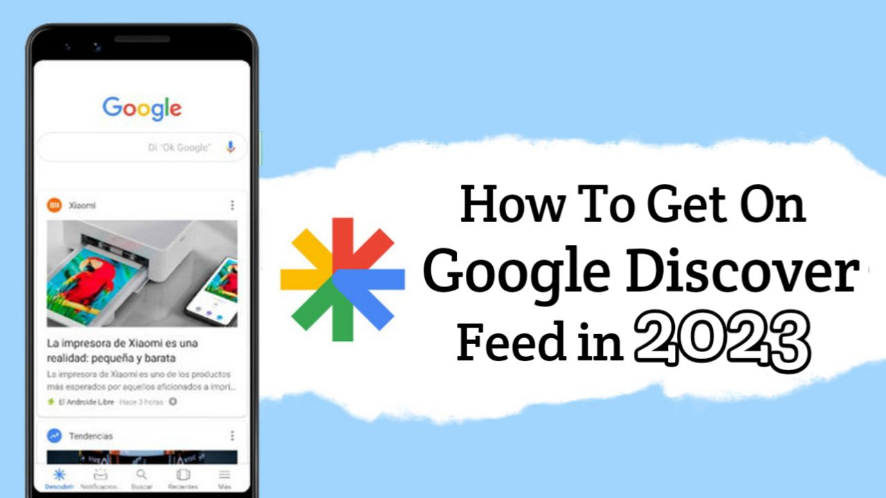
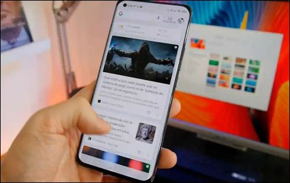
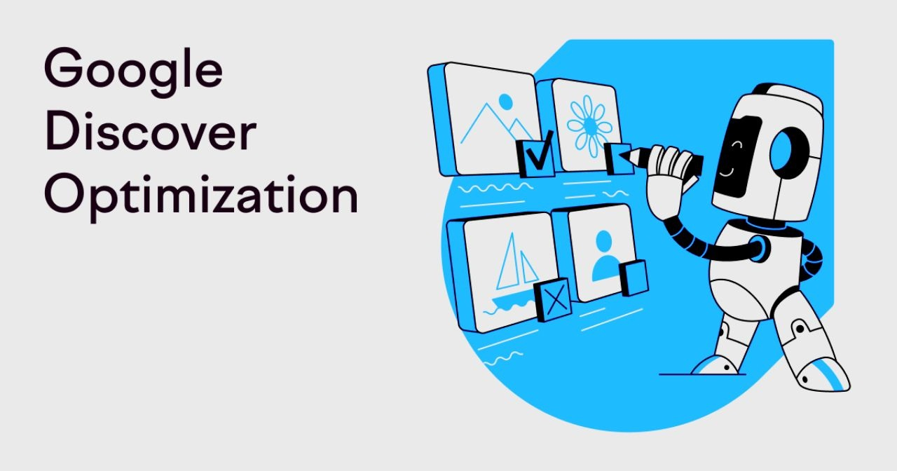

How To Get On Google Discover Feed in 2023

Google is evaluating & monitoring several ways for query-less search. To spice up, it wants its users to have their content delivered in notime without any efforts added. Google's current 800 Million active Discover users claim their queries without typing a single word into the browser. So, Will this affect the website owners? How can they optimize to get their content popup in Discover feed? How can website owners generate traffic from Discover feed?
Table of Content
- What is Google Discover?
- How To Optimize Content For Google Discover?
- Follow Google Policies
- Mobile Friendliness
- Optimize For E-A-T
- Add High-Quality Images
- Publish High Quality Content
- Avoid Clickbait Headlines
- Consistency-Publish Regularly
- Track and Analyze Results
- Benefits of Google Discover Feed
- Final Words
Google Discover - A tool that knows how to grab users preferences, desires & create a highly personalized feeds based on their recent interests & searches. This is the feature that makes it an incridibly powerful and a free marketing tool as well.
Google Discover not only helps you to feature your content to desired users for absolutely free but also helps you to gain more organic traffic, adsense revenue & promote your business.
Before addressing 'How to appear your content on google discover feed', let's discuss briefly about Google Discover, What it actually is! & who can access it.
What is Google Discover?

Google Discover is a powerful scrollable and user based tool offered by Google that offers feeds based on
individual interests & displayes the articles, videos & other content on Google Discover Tab on the
mobile
screen passively.
Learn More
In other words, Google Discover plays with user's search history, location and application activities to suggest the best possible feeds infront of them. For instance, One doesn't need to use their keyboard to search on browser rather the product or article gets recommended on Discove Feed automatically.
To feed user's based content, Google gathers informations from other platforms like Facebook, YouTube, instagram to promote products through advertisements and generate revenue. The AI Bots of Google, searches on the web for the best possible result & suggests feeds to a user.
Why Google Discove Feeds appear on Mobile Devices Only? - The reason for the question is that about 2.65 Billion users use GoogleChrome as their primary browser. Among them 49% + users are mobile users. This is a huge number & Google obviously knows to interact to its users, and Google Discover Tab is targeted to these audience to interact with them.
Since, Google Discover Feed targets interests rather than keywords, how can you get the chance to get your content appear on discover section?
Talking in a general way, You need to publish your content focusing on your niche & targeting to some group of audience who finds it interesting & practical. Naturally, its almost impossible to engage everyone on your content but if your content is valid & suits some user searched interests, its more likely to appear on their discover feeds.
Another Way To Appear On Google Discover is Publishing WebStory.
Learn More Google WebStory
How To Optimize Content For Google Discover?

Optimizing Your Content isn't poles apart from getting your site featured on Google Discover. You simply need to address google discover guidelines and policies with some valuable content to adhere user's interests on your posts. A faster loading and mobile friendly website with key content is the main necessity to get on Google Discover feeds. Having a smooth and low latent webpage can be more efficient to appear on discover.
We've listed some important points to make your content appear on google discover feed. Have a look on every points mentioned below for better understanding about discover.
1. Follow Google Policies
Google has some rules & regulations that need to be addressed by every content creator to enter their content in discover tab. Discover Policy
Google suggests its creators to focus primarily on users based interests rather than search engines. This is important now because google discover is turely based on users interests to make their priorities Google's priority. In order to promote trustworthiness , Google Bots seek content which are fresh, evergreen and focus users attention.
2. Mobile Friendliness
Since, Google Discover Tab is available only on mobile devices, optimizing content for small hand held devices is mandatory in order to appear on google discover. As mentioned earlier, Google wants its users to have enjoyable and reliable experience while surfing their browser.
Mobile Friendly Webpages are more likely to get crawled by Google Bots for the Discover feeds. Besides mobile friendliness also promotes one's business from gaining more followers and traffic which ultimately boosts website ranking as well.
Top 10 SEO Websites to Help Improve Your Search Engine Rankings.
Learn More TOP 10 SEO Websites
3. Optimize For E-A-T
E-A-T stands for Expertise, Authoritativeness & Trustworthiness. In short, it is a factor that helps Google to allow or remove deceptive contents from getting indexed. It is a principle Google's search quality refers use to determine the quality and effectiveness of search results.
The E-A-T determines accurateness in content presented to audience in a way that helps users achieve a better understanding of events.
This feature determines what content is of high quality. To determine whether the content should be ranked higher or not, E-A-T plays an important role.
To show your expertise, address the issues you know and try taking a different approach which feels you knowledgable and use it for your advantages. To determine Authoritativeness, you need to publish high quality content which is insightful and regular. Finally, Trustworthyness denotes making your audience feel secure about your content or business with the use of transparent profile.
4. Add High-Quality Images
Google recommends its creators to use high quality & wider images. According to a study conducted by Google, Uploading large and quality images increase Click-Through-Rate(CTR) and derives more traffic to the website if compared to textual information only.
How large should an image be? - To increase chances on getting content on Discover, Google recommends atleast 1200px wide images with the meta tag of ( max-image-preview:large ) You can use a high qualtiy image and 1200 px wide image but the image shouldn't feature your website logo, this is prohibited by Google.
5. Publish High Quality Content
High Quality Content automatically attracts potential users. Google is completely against palagiarism. Copyrighted & poorly contents impact badly to the audience and can ruin their productive time. Therefore, in order to display your content on google discover, quality content is mandatory.
A quality content is a researched and well managed form of informations arranged in sequence to make users engaged . The main motto of having a quality content is to ensure good user experience on a page. A site with quality content itself gets ranked and served at the frontmost part of the search or feed. Keyword research, queries and their answers must be included in a content for better performance of the posts.
6. Avoid Clickbait Headlines
Google refuses those posts which use clickbait headings. If the google bot notices that your heading doesn't deliver or match with the article you posses on your page then it automatically rejects your posts before appearing in discover feeds.
Clickbait headings shouldn't be used but one can use catchy headings which address the main promise of the content inside the posts. Just point out the main title which reveals your content rather than writing unwanted spam headings. For example, if you've a news website, you can use headings based on your research and discoveries which addresses the assense of your article.
7. Consistency-Publish Regularly
Google Discover is seeking for contents to display on discover feeds. For that one should publish his/her content without delaying in a regular or timely basis. The contents which are fresh and uptodate are more likely to get crawled by bots and featured on discover feeds as well. Be patience, and upload your articles in a consistent way following all the guidelines and policies.
If your content gets discovered on google discover feeds, then you've successfully passed all the tests of Google and are ready to get served to your potential users. Make sure that you are regular and consistent with high qulaity content as there is huge competition in the market to get visible in 1st section in feed.
8. Track and Analyze Results
Once your contents start appearing on google discover feeds, you can analyze the performance of your served feeds from google search console or google analytics. A discover section is activated on your search console where you'll be able to see all the performance level of your pages.
You need to figure out which one of your site is performing well in google discover feeds and which one is performing less. Try to compare them and figure out the reasons behind their success and failures. Check CTR, impressions, which will help you gain more confidence to work on future projects.
Google Keyword Planner: The Ultimate Tool for SEO Success Learn More
Benefits of Google Discover Feed
Getting featured on google discoverd isn't a small deal. Once you get served on discover feed, you can be confident about the quality of your site. Not every site gets discovered on feeds. Visibility of your articles on google discover feed has several benefits including increased visibility, increased traffic, user engagements, increased CTR and many more.
-
Increased Visibility : Google Discover is all about user's interests. So, its obvious that your content will be served to the audience which are interested in such types of contents. Moreover, you piece of content will popup on every screen which has the necessity of such contents. This directly affects your performace in search console dashboard. Increased visibility or impressions can help run high quality advertisements and more clicks, increasing more revenue than usual.
-
Increased Engagement : With such great impressions, most of the users access your articles and read them. This increases engagement of the users. Increase in engagements boosts your ranking in google feeds as well because your content is more engaging than others. Basically, more impressions means more engagement as user find your content more useful and productive. This boosts your site performance overally and increase revenue.
- Increased Traffic : Being indexed on discovr feed automatically generates more traffic. User's get attention on your posts which results in increased traffic. But you need to make sure that you've better title and thumbnail to impress your audience from very first sight. Because of high competition, your content may appear shorter or longer duration on feeds, so its necessary to have engaging content and user based articles.
Final Words
Optimizing your article or Google Discover shouldn't be brainstorming for you. Just following the above points, one can easily serve their content on discover feed in notime. This is an opportunity for every creator who wants to get noticed with larger audiences. Focus on your content and try to make them more practical which would address user's needs.
Carry on creating quality content for your target audience and figure out the keywords that catch the main motto of your content. Possess quality images with atleast 1200px width and focus on E-A-T as well. As mentioned earlier, Don't ever try to copy same from other's content rather take some ideas from others articles and modify them in a unique way to engage your potential audience.
There are several benefits of appearing content on discover feeds. Try to make a goal to achieve them. SEO plays an important role to rank your site.
If you want to learn more about SEO Click Here.